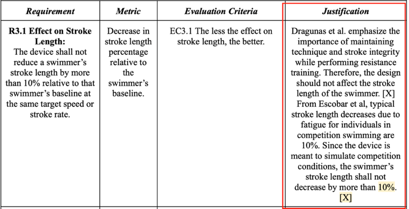
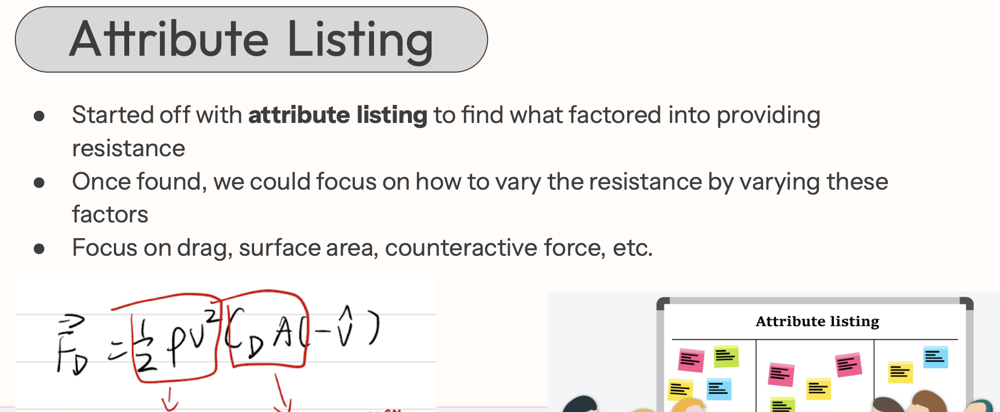
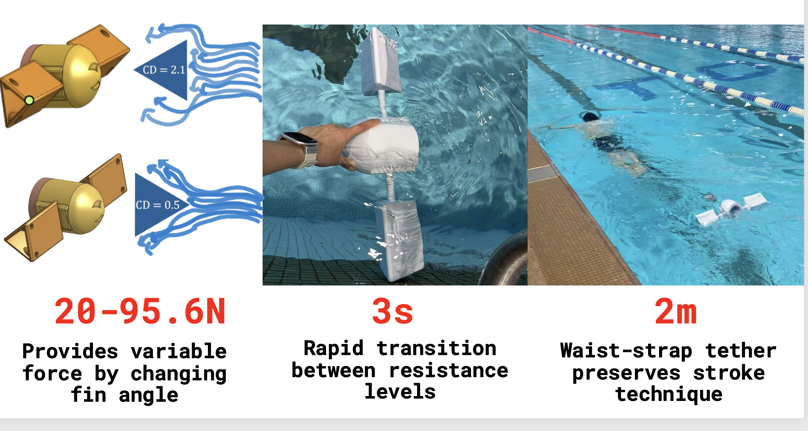
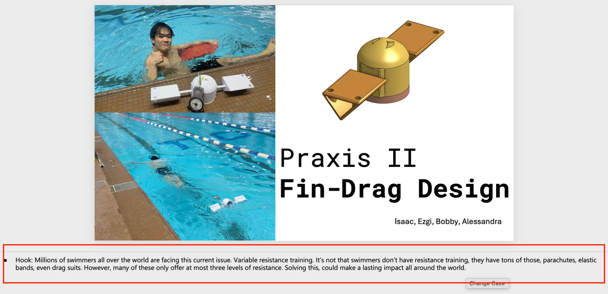
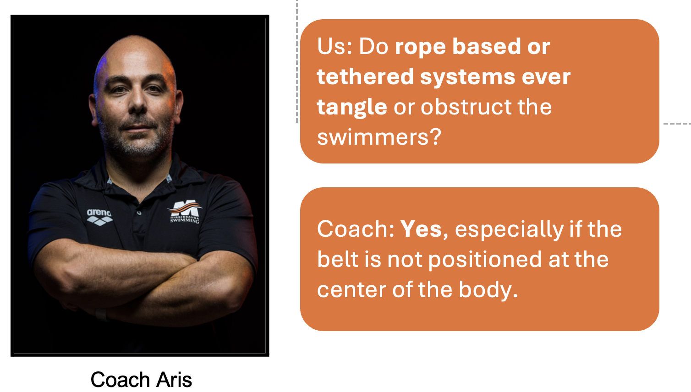
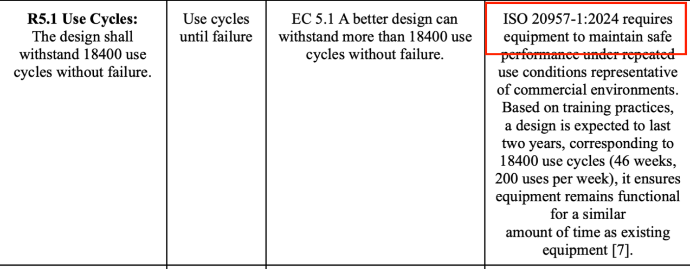

Design Project 03 · Winter 2026
Praxis II: Variable Swim Resistance Device
With Alessandra Gaspari, Ezgi Muslu, and Isaac Xing
Praxis II offered me a chance to apply CTMFs and the scientific process learned in Praxis I more thoroughly. My value of understanding our own limitations, understanding stakeholders through scientific methods, and validating a design through testing remains the same.
One-Page Summary
Scroll inside the document to read both pages
Annotation
Going Beyond the Given Frame
The original RFP already set up a scientific frame for the problem. Our team chose to extend it through secondary research rather than accept it as given. This is a direct application of the lesson from Praxis I: stakeholder interviews alone are not sufficient to steelman a framing claim. Secondary research let us refine the opportunity and justify requirements with independent evidence.
Making Claims Defensible
A key challenge in any showcase or presentation is making claims checkable by the audience without requiring them to trust you. In Praxis II, we learned to build that through quantified evidence (Logos), credible standards (Ethos), and emotional engagement (Pathos) together. Each element does a different job. Logos gives numbers the audience can evaluate. Ethos borrows authority from standards. Pathos gives the problem urgency. Without all three, the design claim reduces to an assertion.
CTMFs Used
Evidence of Use
Though the original RFP already established a scientific frame, our team conducted secondary research to understand the opportunity more deeply. We found that during underwater drag training, stroke length is related to preserving technique in swimmers. This led to a new requirement — Requirement 3.1 — that the device must not significantly reduce stroke length. This requirement would not have existed without secondary research.

Fig. 1. Requirement 3.1: Effect on Stroke Length. The red rectangle highlights the justification column, which cites secondary research rather than stakeholder interview alone.
Assessment
Secondary research is most valuable when the given problem frame is plausible but unverified. Here it both confirmed the opportunity and added a constraint that protected the design from unintended harm to user technique. It also made the requirement defensible to an external reviewer.
When a frame is given rather than derived, use secondary research as due diligence. It either steelmans the frame or reveals a gap in it.
Evidence of Use
We derived the expression for drag force underwater and diverged by independently varying each physical variable in the expression. This generated a structured concept space, including the fin-drag concept and the floatie concept, each targeting a different variable.

Fig. 2. Screenshot of the Beta Release document, showing how attribute listing was used as a diverging tool.
Assessment
Attribute listing produced concepts that were systematically distinct rather than intuitively similar. Its limitation in this project: anchoring divergence to the drag force expression constrained the design space to in-water solutions only. Concepts that addressed the problem differently — such as dry-land resistance training — were never generated. This was the right trade-off given the brief, but the constraint should be made explicit rather than left implicit in the choice of expression.
Attribute listing is a reliable divergence tool, but the starting expression sets the boundaries of the concept space. Name those boundaries explicitly.
Evidence of Use
We structured the final presentation around Ethos, Pathos, and Logos to make the design claim defensible at the showcase.
Logos: Quantified evidence — a force range of 20.3–404.8N and 8 resistance levels — makes the claim checkable. A viewer does not have to trust the team. They can evaluate the numbers directly.

Fig. 3. A screenshot of the presentation showing quantified force range and resistance levels. Specific numbers let the audience evaluate the claim without relying on the team's credibility alone.
Pathos: The hook ("millions of swimmers face this issue") and the citation of coach Aris's words gave the problem urgency and grounded it in expert experience.

Fig. 4. First page of the presentation with red rectangle highlighting the hook note.

Fig. 5. Screenshot citing coach Aris's words to indicate the limitation of this prototype.
Ethos: Requirements were justified using ISO standards and secondary research. Credible sources make the requirements defensible to an external reviewer.

Fig. 6. Requirement 5.1: Use Cycles. The justification column (red rectangle) cites an ISO standard to justify the requirement number and its importance.
Assessment
The three types of appeal work together. Logos alone is cold. Pathos alone is unverifiable. Ethos alone is appeal to authority. The combination makes a claim both emotionally compelling and independently verifiable.
In any presentation, check that all three appeals are present. A missing appeal is a gap that a critical audience will find.